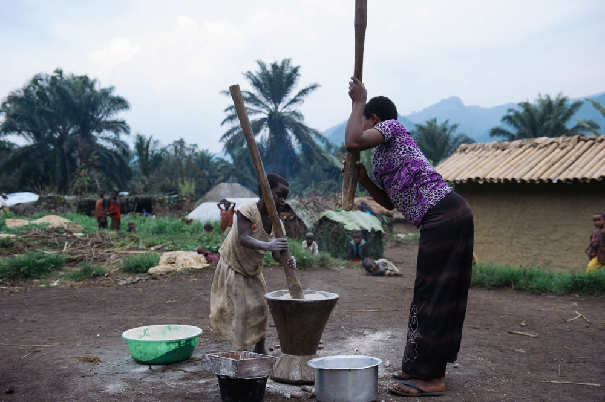
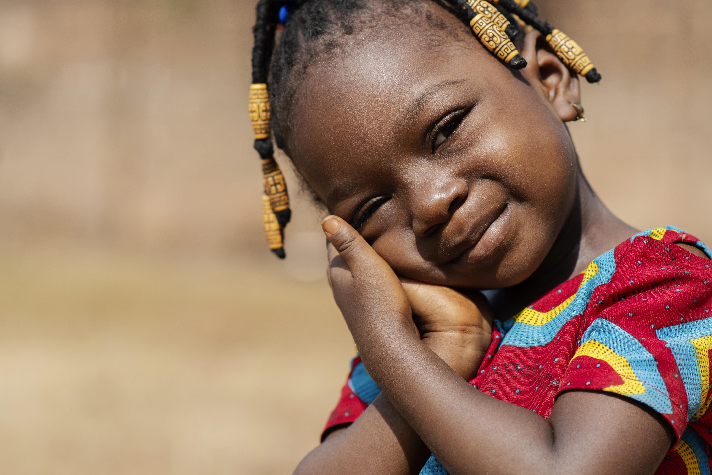

To bring Hope to the extreme poor and work for an entirely stable society in which poverty, inequality and injustice are eradicated, where man, woman and child can live well with dignity and hope.
Our mission is rooted in the Protestant-Christian tradition. The social message of this tradition is our main source of inspiration.
Our vision is of a just world and without poverty. The Sustainable Development Goals (SDGs), also known as the Global Goals, adopted by the United Nations General Assembly in September 2015 include the goal to eradicate poverty by 2030 and the commitment to "Leave no one behind », a world in which all can live in dignity, regardless of the social situation and economic environment. A world where people claim and assume their rights in a viable civil society.
HOPE FOR AFRICA strives to realize such a world where “No One is Left Behind” by working for the neglected poor as stated in our mission statement. We believe that exclusion and scarcity, created and compounded by unequal balances of power, are the main drivers of poverty
The core values guide our work: Justice, Compassion, Stewardship and Hope
Justice
Finds (part of) its application in the fulfillment of human rights, in equalrelations between men and women, and in being accountable to each other about our policies and actions. We believe that each individual was created in the image of God, that he is unique and that he deserves the greatest respect.
As a result, we reach out to all those in need, regardless of origin, gender, religion, age or nationality. Wherever possible, we adapt our assistance to needs and contexts, respecting the dignity and autonomy of the people we assist. We also believe that everyone has the inalienable right to live with dignity and realize their potential. We believe the fruit of justice to be peace. Dignity, equity and human rights are values that serve to promote justice.
Compassion
Moves us to be committed to those who suffer and are excluded, in their sorrows as well as their aspirations and hopes. Their appeal on solidarity and justice forms the basis for our work. We wish to relieve the suffering of those living in crisis, disaster or conflict.
We identify the most vulnerable people and reach out to them to offer them practical support in emergency and reconstruction. We believe compassion is more than individual charity. Compassion challenges us to seek the root causes of vulnerability and exclusion. We believe justice to be rooted in com - passion.
Stewardship
Means that we take and we share responsibility for the wellbeing of the whole living earth, now and in the future: land and its natural resources, our environment and sources of energy. We feel responsible to relieve the burden our generation has placed on the earth and on future generations.
We stand in solidarity with those who live on the margins of society as a result of centuries of oppression and work together to address systemic injustice. We believe good stewardship to be rooted in compassion with and justice for the earth
Hope
leads us to work collaboratively to achieve our shared goals based on long-term commitments. We are not discouraged by setbacks, and we take joy in progress. We want to give hope to people afflicted by crises and oppressed by situations that seem hopeless. We support these communities in the implementation of sustainable improvements and develop their capacities to build a better future.
We feel responsible to lighten the burden of future generations that our generation has placed on the earth. We believe that hope is rooted in caring, compassion and justice. Hope gives life. And it seems that hope is always there, even in the worst conditions. These core values shape our vision of a peaceful, just and sustainable society. They impact our theory of change and give direction to our practical work. They inspire us to work with people from different cultural and religious backgrounds who share these values. Related to the above values, HOPE FOR AFRICA has defined operating principles, which guide our operations: inclusiveness, accountability, and innovativeness
H4A is an international emergency relief and development organization. We believe in a world where people can break through barriers of poverty and exclusion.
H4A is a Congolese law non-profit establishing its headquarters in Uvira, Eastern DRC. It's a humanitarian aid and development cooperation organization that supports vulnerable and most isolated people in order to allow them to access their fundamental rights, well-being, and restoration of dignity and to bring hope to the hopeless.
Our ultimate goal is to break the cycle of poverty and help people lead dignified lives. We support local communities in their efforts to improve healthcare, food security, education, security and justice. Where disasters strike, we offer humanitarian assistance. The Christian values of human justice, compassion, stewardship and hope guide us in our work.
H4A restores dignity, well-being and hope to the Hopeless and create a better society by empowering lives, transforming Communities, and breaking the cycle of poverty. H4A works for better access to basic social services, initiates sustainable and rational economic development, and also works for the promotion of peace and democracy. As part of Christian organization, H4A cares orphans and widows in the spirit of James 1:7.
In concrete our program interventions focus on:
• Conflict Transformation and Democratization (CT&D)
• Fair Economic Development (FED)
• Food and Nutrition Security (FNS)
• Fair Climate & Biodiversity (FC&B)
• Water, hygiene and sanitation (WaSH)
• Medical Aid and Reproductive Health (MARH)
• Education & Learning
• We are committed to helping the extreme poor with the most effective and efficient methods.
• Donations made to our Most Urgent Needs fund will be directed to where needed most; this includes our Hope for Today, Hope for Tomorrow and Hope for Eternity strategy and all Hope for Africa operations and program activities around the world.
• We promise to treat every penny donated as if God, Himself, gave it to us.
• We promise to treat you as an Ally, working together to bring Hope and help to those living in extreme poverty.
• We promise to help you grow, connect and celebrate the impact and difference you are making in the lives of the poor.
• We promise to report the impact of your gifts and provide regular program updates.
• We will never give, lend, or sell your personal information.
Hope for Africa was founded in 2017 under the initiative of Mr. Eliphaz Bashilwango Lukendobonga, with the aim of breaking the cycle of poverty and helping people to lead a dignified existence, following a civil war which continues to devastating the country for more than two decades now. During this war, our country suffered a serious political crisis from which resulted a socio-economic and security destabilization with fierce and unfortunate consequences: war crimes, enlistment of children in armed forces and groups, massive rape of women causing the advent of the scourge of HIV-AIDS, plundering of natural resources, murders, massive displacement of the population, serious violation of human rights, gender-based sexual violence,... In short, human dignity fiercely flouted. All this; leaving the humanitarian situation to become dramatic and catastrophic. The human rights situation is dire for children and they face a myriad of daily challenges: poverty, sexual violence, disease, and the inability to access food and clean water. Their fundamental rights are regularly violated and they are frequently exposed to violence from armed groups, in some cases abducted and coerced into military forces. The war took hold there, hence the large number of orphans of two parents, not to mention AIDS, which was added to the causes of mortality.
During the war, the soldiers and the rebels have and continue to rape and sequester with total impunity young child-girls who have not even reached the age of 15 for the most part. Children were born from these horrific crimes. These children are not accepted. These girls are rejected and entitled to nothing.
Old grandparents find themselves with grandchildren whom they cannot take care of, whom they cannot feed… Weakened and worn out, they can only wait for manna from heaven
Children are forced to work to feed the younger brothers/sisters and the elderly. Children perform heavy work like adults despite their infantile fragility; they have no other choices or other alternatives for survival.
These children should be in school instead of working hard all day and coming home exhausted in the evening with a few miserable foodstuffs, to resume the same chore the next day. We see these days that many key sectors of life, such as access to basic social services, are already neglected by those responsible for them and people no longer have the right to lead a dignified existence! The heavy price paid in terms of suffering, sacrifice, injustice, humiliation, tears and the list goes on, has become unbearable for the vast majority of the population in Africa. The reputation and credibility of the DRC are severely damaged both inside and outside the borders.
And yet, it is undeniable that our country and the Great Lakes region have an incredible capital wealth in terms of natural and human resources, of which the population should benefit. This unfortunately is far from being the case, the living conditions of the vast majority of our compatriots being anything but in keeping with human dignity
Faced with these findings and the paradox of our country, "which lacks nothing except everything", people from all walks of life joined in the appeal of the founding president, Eliphaz Bashilwango, development technician, that H4A is the result of his vision so that the living social forces form a sanitary cordon capable of guaranteeing a better life and the radiant hope restored thanks to a dignified existence.
To remain silent in the face of the bitter experience of human rights and poverty is only culpable. It is in this spirit that the founding members had decided to constitute themselves as a non-profit organization governed by law N° 004-2001 of July 20, 2001.
Founded in 2017 H4A is an impartial, independent and neutral humanitarian organization inspired by the Christian faith to save lives and alleviate human suffering in the most difficult to reach and devastated places in Africa. Its vision towards creating a just world and without poverty is based on simple basic principles, which we consider fundamental: ensuring sustainable livelihoods and justice and dignity for all. Why these two? Because a life without a man is not sustainable and because dignity only comes with a life in which rights are respected. Its scope of action covers the DRC and will extend to the countries of Africa, and will have a continental scope.
"Give the Africa that gives hope".
At Hope for Africa, our whole team is passionate about connecting you with opportunities that impact the extreme poor in some of the poorest places in the world. If you have any questions, call or email us at +243 994-936-531 or hopeforafricag@gmail.com. We look forward to partnering with you!
Our mission is to take care of people in suffering or in social difficulty, in particular pygmies, orphans and widows.
Hope for Africa works in the following three ministries :
i. Pygmy Community Empowerment Ministry
The Indigenous Peoples (pygmies), one of the minorities of the Democratic Republic of Congo, have long remained on the margins of modern society. Because of this, they do not have the same political and economic influence as other groups, and their way of life, once purely attached to the forest, has undergone changes that are becoming even more fragile, in a context of progressive sedentarization, yet already disabled.
As a result, their integration is of growing concern to the Government, civil society and even donors in the DRC.
This is how the objective is to contribute to the implementation of actions to reinforce the capacities of the Pygmies in the territories where they are installed in order to improve their living conditions.
In terms of the implementation of development plans for indigenous peoples in the DRC, the priorities for the Indigenous Peoples Plan can be broken down as follows :
HOPE FOR AFRICA envisions a world where under-resourced, Ministries transform their communities by bringing hope for today, tomorrow and eternity to the extreme, while becoming self-sustainable.

ii. Widows & Childcare Ministry

We fight to defeat hunger, poverty, disease, illiteracy, and lack of opportunity in the world. Through our research, work on the ground and key partnerships, we work hard to support orphans and widows in particular and strive to build brighter, independent and sustainable futures for them.
With Childcare Ministry, The Charity transforms the lives of children by exposing them to the gospel of Jesus Christ, providing for their physical needs and supporting their education. Childcare Ministry includes evangelism and discipleship activities that meet the spiritual needs of children and holistic ministries that meet the physical, emotional and developmental needs of children.
Hope Center has evolved into a Ministry that takes care of orphans and vulnerable children, provides education to children with special needs and helps them to become productive and responsible members of the community, continuing support into adulthood through a working care farm and skills development opportunities.
It defends the children's rights, defends them as defender, feeds them, clothes them, protects them from those who mistreat them, ensures justice for them, shares their resources with them and finds families for them.
Development actions for these vulnerable populations must therefore be carried out given their way of life.
There is a Ministry of Welfare granted to those who are truly widowed in the spirit of “Let the Widow Live” and Children. This ministry is called to succor and assist true widows and Children.
Hope for Africa is always humbled at the incredible support our community shows up with. We couldn't do this essential work without your generous financial support.
DONATE TODAY
ONLINE
Give a one-time gift or become a monthly financial partner.
BY MAIL
You can send a check or cash to PO Box 2383 Bujumbura, Burundi to support Hope for Africa.
BY PHONE
Call (+243) 099-493-6531 and a staff member will assist you with making a secure donation over the phone.
Call +243 814-865-613.